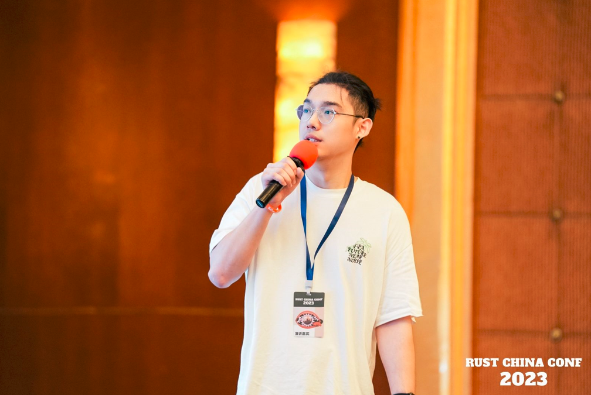
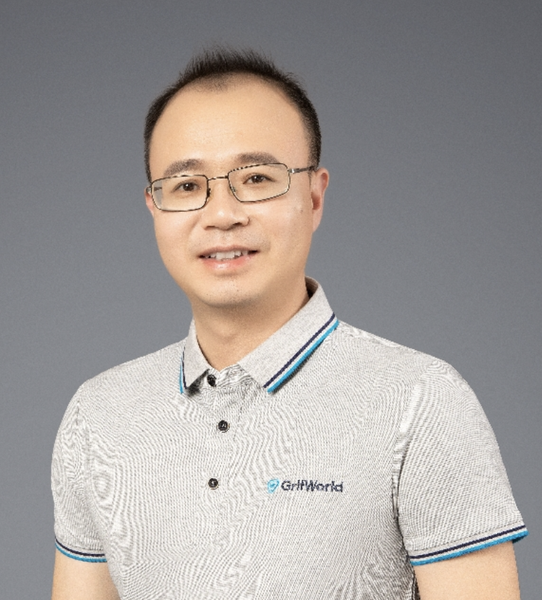

speakers
AI
Loubna Ben Allal


Loubna Ben Allal is a Machine
Learning Engineer in the Science team at Hugging Face working on LLMs for code. She is part of
the core team behind the BigCode Project and has co-authored The Stack dataset, SantaCoder,
and StarCoder models. Loubna holds a Master's Degree in Mathematics and Deep Learning
from Ecole des Mines de Nancy and graduated from the MVA Master program at ENS Paris Saclay
David Bian

Senior Manager of Strategic
Alliance Ecosystem at Arm China, focusing on domestic software technology ecosystems and
strategic collaborations. Possesses extensive professional experience in processor technology,
software ecosystems, machine learning, and system solutions.
AI
Bohua Chen

Bohua Chen is the head of R&D
at the Shenzhen Graduate School of Peking University-Rabbit Zhan Intelligence AIGC Joint
Laboratory, responsible for the ground-up R&D of big language modeling products in
vertical domains. His research interests include big language modeling and reinforcement
learning. The open source project Chatlaw initiated by him is dedicated to solving the problem
of accessing legal aid services for ordinary people with big language modeling, which has been
implemented in several scenarios.
Hai-Xu Cheng

Hai-Xu currently works as the IBM
Global Lead and IBM GCG (Greater China Group) CTO (standards and open source). Hai-Xu is
actively working on watsonx and generative AI at the moment. Hai-Xu has involved in the
development of many China and international (ISO/IEC JTC1 SC42 (AI), SC38 (Cloud), ISO TC307
(blockchain)) standards, including AI, cloud, blockchain, Cybersecurity, IoT and big data
standards. In recent years, Hai-Xu has also actively engaged in developer advocacies and open
source projects promotion (AIX360, AIF360, ART360, Caikit, Kepler, Hyperledger etc.). In the
past, Hai-Xu served as the lead of the IBM Global Cloud Computing Center of Excellence for
Asia Pacific and participated in the implementation of many large global cloud services
projects which leveraged the open cloud technologies. Hai-Xu has also served as the Chief
Enterprise Architect for IBM GCG and many institutions in Australia and Singapore, and led the
enterprise architecture and solution architecture development, implementation, operation and
governance for many large enterprises across Asia-Pacific countries and regions (Australia,
Singapore, Malaysia, Philippines, and Great China etc.).
AI
Bosheng Ding
Bosheng Ding is the founder of
the open source project, PandaLLM. He is a researcher and PhD candidate at Nanyang
Technological University, focusing on deep learning and natural language processing. His
research focused on Large Language Models and Robust NLP Systems. Bosheng has demonstrated a
strong aptitude for research, as evidenced by his publications at top AI conferences. In
addition to his own research, Bosheng has also served as a reviewer for various AI
conferences, including EMNLP, ACL, KDD, SIGDIAL, and WSDM. He is also an adjunct lecturer on
digital marketing at the Singapore University of Social Sciences. Prior to his Ph.D. studies,
Bosheng worked as a financial risk management consultant for PwC Consulting. In this role, he
contributed to projects in a number of countries, including Singapore, Thailand, the
Philippines, Malaysia, Austrilia, and South Africa. Bosheng’s experiences in academia and
industry have equipped him with diverse skills and perspectives, making him well-suited to
tackle complex problems at the intersection of technology and business.
AI
Joseph Gonzalez
Joseph E. Gonzalez is a Professor
in the EECS department at UC Berkeley, a co-director and founding member of the UC Berkeley
RISE Lab and a member of the Berkeley AI Research (BAIR Group). His research interests span
machine learning and data systems.
AI
Xu Han
Han Xu is the chief researcher at
ModelBest. He was a postdoctoral fellow at Tsinghua University, with research directions in
natural language processing, pre-trained language models, and knowledge graphs. He has
published numerous papers in international conferences on natural language processing and
artificial intelligence such as ACL and EMNLP. He has been cited over 5,900 times on Google
Scholar. As one of the main contributors, he participated in the community building of the
OpenBMB large model and the open-source of the CPM series models. During his doctoral studies,
he received various honors including the National Scholarship, Tsinghua University's
Jiang Nanxiang Scholarship, Tsinghua University's Department of Computer Science Zhong
Shimou Scholarship, Tsinghua University's Outstanding Doctoral Dissertation, and the
Microsoft Scholar Scholarship. He was selected for the CCF Excellent Doctoral Dissertation
Incentive Plan for 2022, the Postdoctoral Innovative Talent Support Program, and the Tsinghua
University Shuimu Scholar Program.
AI
Kunhao Pan

Kunhao Pan graduated from Beijing
University of Posts and Telecommunications in 2017 with a master's degree. He is
currently the head of the expert model team at IDEA-CCNL and co-leads the development of the
Ziya series of large language models. His main research areas are natural language processing,
large language models, retrieval algorithms, and few-shot learning. He has led the team to win
the FewCLUE leaderboard championship multiple times.
Shishir Patil
Shishir Patil is a CS PhD
student at UC Berkeley, where he is advised by Prof. Joseph Gonzalez and Prof. Prabal Dutta.
He is interested in designing and building efficient machine-learning systems for the two
extremes of computing - edge and multi-cloud. Recently, he is focused on teaching LLMs to use
tools through API calls. His works include Gorilla LLM, Skyplane, and POET. He was a Research
Fellow at Microsoft Research, and has interned at Amazon Science, Apple, and Google Brain.
AI
LINGYUN TAN

Lingyun Tan is the Shanghai
R&D center GM at Ysemi Computing, managing the engineering team on the hardware design and
validation, for Arm based cloud native CPU. He has 20+ years’ experience on silicon,
platform/system engineering activities. Prior to Ysemi, he was the Chief Engineer at AMD and
the platform leader, managed APU and GPU engineering and project teams.
Tong Li

Chief of Artificial Intelligence
at Luchen Technology
Vivian Hu

Vivian Hu is a Product Manager at
Second State and a columnist at InfoQ. She is a founding member of the WasmEdge project. She
organizes Rust and WebAssembly community events in Asia.
AI
Hao Wang
Hao Wang received his Ph.D. in
Physics from Peking University in 2018. His research interests include deep reinforcement
learning, natural language processing, and cognitive intelligence. He has published more than
10 top-tier papers and holds several patents in both China and the United States in these
domains. Currently, he is the head of the RL algorithm team at IDEA-CCNL, where he co-leads
the development of the 'Ziya' series of general artificial intelligence models.
Wilson Wang

Wilson Wang is a researcher at
ByteDance's North American branch. He earned his Ph.D. from the State University of New
York in 2013. His research primarily focuses on areas such as VM (Virtual Machines), operating
systems, distributed systems, network protocols, and network virtualization. Currently, he is
concentrating on the applications of WebAssembly in distributed computing engines,
heterogeneous computing, and AI-related fields.
Junchen Yan
Dify.AI co-founder & VP of
Product, with over 10 years of experience in product architecture and commercialization;
Previously deeply involved in the online education and enterprise service sectors, excelling
at PMF (Product-Market Fit) validation and driving business growth from a scale of 1 to 10;
Currently focused on the LLMs Infra domain, dedicated to liberating human creativity through
LLMs-related technologies and products.
AI
Yang You
Yang You serves as a Presidential
Young Professor at the National University of Singapore (NUS), joining the ranks of
exceptional early-career talents. He earned his Ph.D. in Computer Science from UC Berkeley
under the guidance of Prof. James Demmel, a notable figure in the Computer Science Division
and the EECS Department. Yang's research delves into Parallel/Distributed Algorithms,
High Performance Computing, and Machine Learning, primarily focusing on amplifying deep neural
network training on extensive systems. In 2017, his team set a new benchmark by achieving the
world's fastest ImageNet training speed, gaining significant media attention. Two years
later, they surpassed the world record for BERT training speed, influencing the training
techniques adopted by tech behemoths like Google, Microsoft, and NVIDIA. Yang's
pioneering LARS and LAMB optimizers feature in the industry-standard MLPerf benchmark. Over
the years, he has clinched numerous awards, such as the IPDPS 2015 Best Paper Award, ICPP 2018
Best Paper Award, and the prestigious AAAI 2023 Distinguished Paper Award. Recognized as a
Siebel Scholar and recipient of the Lotfi A. Zadeh Prize, Yang was also UC Berkeley's
nominee for the ACM Doctoral Dissertation Award. His influence and achievements secured him a
spot in the Forbes 30 Under 30 Asia list in 2021 and earned him the IEEE CS TCHPC Early Career
Researchers Award.
Keynote
Michael Yuan
Michael is the maintainer of
WasmEdge Runtime, a cloud native WebAssembly sandbox project under CNCF. He is the author of
six books on software engineering.
Bruce Zhang
Bruce Zhang is the system
architect of Alibaba Cloud, responsible for ECS ARM product line and cloud native Application
performance.
Main work is to build Cloud product competitiveness, performance optimization, ecosystem
construction. And for the large-scale application of Arm ECS in the group and the cloud PaaS
products.
AI
Tianjun Zhang

Tianjun Zhang is a PhD student at
UC Berkeley, advised by Prof. Joseph E. Gonzalez. He has been in active collaboration with
Prof. Pieter Abbeel and Prof. Sergey Levine. He mainly works on the Reinforcement Learning and
Large Language Model backed agents. His has published more than 15 papers on the top-tier
machine learning conferences (NeurIPS, ICML and ICLR), including two oral presentations. He
co-leads the Gorilla project, which aims to build LLMs connecting with external tool usage
through API calls.
AI
Yanzhi Wang
Yanzhi Wang is an associate
professor and faculty fellow at Dept. of ECE at Northeastern University, Boston, MA. He
received the B.S. degree from Tsinghua University in 2009, and Ph.D. from the University of
Southern California in 2014. His research interests focus on model compression and
platform-specific acceleration of deep learning applications. His work has been published
broadly in top conference and journal venues (e.g., DAC, ICCAD, ASPLOS, ISCA, MICRO, HPCA,
PLDI, ICS, PACT, ISSCC, AAAI, ICML, NeurIPS, CVPR, ICLR, IJCAI, ECCV, ICDM, ACM MM, FPGA,
LCTES, CCS, VLDB, PACT, ICDCS, RTAS, Infocom, C-ACM, JSSC, TComputer, TCAS-I, TCAD, TCAS-I,
JSAC, TNNLS, etc.), and has been cited around 16,000 times. He has received six Best Paper and
Top Paper Awards and one Communications of the ACM cover featured article. He has another 13
Best Paper Nominations and four Popular Paper Awards. He has received the IEEE TC-SDM Early
Career Award, APSIPA Distinguished Leader Award, Massachusetts Acorn Innovation Award, Martin
Essigmann Excellence in Teaching Award, Massachusetts Acorn Innovation Award, Ming Hsieh
Scholar Award, YIP Award and other research awards from Google, MathWorks, etc.
Yang Feng
Dr. Feng is an assistant research
professor in the Department of Computer Science and Technology at Nanjing University. Before
that, I obtained my Ph.D. degree from the University of California, Irvine, in 2019. He got my
B.Sc. Degree from Nanjing University. His research interests lay on the quality assurance of
complex software systems and the implementation of reliable software infrastructure.
Rust PL
Jack Huey
Jack has been involved in the
Rust Project since 2019, first contributing to Chalk, then later to the compiler itself. He
currently co-leads the types team, is a member of the compiler team, is a lang team advisor,
and is the lang the representative for the leadership council. While working as a graduate
student studying mouse thymus development, his passion in Rust is type system design and
experimentation.
Rust PL
Ming Li
In 2004, Ming participated in
establishing one of China's earliest embedded Linux professional education institutions,
Beijing YaQian Education, and trained over 6,000 embedded development engineers. In 2022, He
started the os2edu.cn open-source operating system community platform and the rustedu.com Artu
education website, through which he trained thousands of Rust programming developers through
systematic courses. He holds a Master's degree in computer science from Tsinghua
University.
Rust PL
Rustin Liu

I'm Rustin Liu, a senior
software engineer at PingCAP, with a passion for distributed systems and programming tools. I
am also an active contributor to Cargo, Rustup, and Rust projects.
Rust PL
Quanyi Ma,
Board Member of Web3
Infrastructure Foundation
Rust PL
Bart Massey
Professor Bart's research
interests are quite broad, but all contain an emphasis on open source technology development
and software engineering. I have a Ph.D. in artificial intelligence, and do some work around
applications of search and machine learning in autonomous systems, planning, and scheduling,
and one- and two-player games.
Rust PL
Nicholas Nethercote
Dr. Nicholasis a seasoned
software engineer and team leader specializing in performance optimization and memory
efficiency. With significant contributions at Futurewei, Apple, and Mozilla, he has improved
Rust compiler, Firefox, and pdf.js among others. A dedicated profiler developer and code
refiner, they've also led key initiatives like Project Candle and MemShrink. Dr. Nicholas
won the Most Influential PLDI Paper Award for research on Valgrind, the subject of their PhD.
He has a passionate educator, known for 'The Rust Performance Book' and numerous
insightful blog posts. Their versatility extends to diverse projects like power estimates and
OS X deep-dives.
Rust PL
Henk Oordt
My name is Henk. I’m an embedded
software engineer at Tweede golf, and I use Rust for my daily work. I’m also a maintainer of
Rust 101: a modular, reusable Rust university course, for which I have received a grant from
the Rust Foundation. In this talk I will explain how oxidizing education can be part of the
way Rust becomes mainstream. I will reflect on why, currently, Rust is not taught on a lot of
educational institutions, and how this affects the job market. Furthermore, I will introduce
my ideas on how to break the cycle of there not being a lot of Rust jobs because there are not
a lot of Rust trained graduates and vice versa. Then, I will introduce Rust 101, which is my
effort to oxidize education, which has seen it first run this spring.
Rust PL
Vadim Petrochenkov

Senior engineer at Huawei, Rust
compiler team member since 2017. Compiler areas of responsibility or expertise: name
resolution, macro expansion, privacy, parser and lexer, interactions between rustc and linker.
Rust PL
Josh Triplett
Josh is a developer on the Rust
project. I co-lead the Rust language team, and work on the Rust library team and the Cargo
package manager. I care about building welcoming, inclusive communities that lift people up. I
love building solutions to systemic problems.
Rust PL
Hui Xu
Hui Xu is currently a
Tenure-track Associate Professor in the School of Computer Science, Fudan University. His
research interest lies in the field of program analysis and software engineering, as well as
their applications in AI systems, mobile computing, and cloud. He obtained his Ph.D. degree
from The Chinese University of Hong Kong. He is the recipient of ACM SIGSOFT Distinguished
Paper Award, CUHK Postdoctoral Research Fellowship, CCF-Ant Fund, etc.
Rust PL
Amanieu d'Antras

Amanieu is a Rust expert working
at the Huawei Ireland Research Center on improving the Rust language and promoting its use
within Huawei. His specialty is binary translation, on which he wrote his PhD dissertation and
subsequently founded a startup to continue working on the technology. Amanieu joined the Rust
library team in 2019 and leads the Rust inline assembly working group.
Mobile & Web
Rik Arends
With 20+ years’ experience as a
C/C++, JavaScript and more recently Rust developer, I've always been excited by using
computation for visuals and audio. For this to work you need performance, and a smooth
workflow enabled by the right tooling. After having everything I wanted with C except stable
code I moved to JavaScript and web technologies. However, this never got to the point of being
able to make fast applications that use modern CPU and GPU power. Now with Rust we have a new
chance. I've been an entrepreneur my entire life building VJ software in the 00's,
then web UI technology and web IDEs with Cloud9, and am now reimagining the developer workflow
in Rust with Makepad.
Mobile & Web
Jorge Bejar

Graduated with a computer
science degree and with more than 15 years of experience in the software development field,
Jorge Bejar started as web developer writing PHP applications. He has later spent a few years
hacking games for different platforms with C++. Around 2010, he joined WyeWorks and he has
been working in projects using Ruby, Elixir and, lately, Rust. He has also been collaborating
with different open source projects. He lives with his wife and two kids - 2 and 7 years old -
in Montevideo, Uruguay.
Game & Metaverse
Alice Cecile
Scientist and game dev tackling
the impossible. I'm always looking for interesting problems to solve and new ways to look
at things. I have a strong background in complex systems ecology, am one of the core
maintainers of Bevy, the most popular Rust game engine, and have a passion for statistics and
machine learning.
Mobile & Web
Mingyu Chen

Open-Source engineer working for
Huawei. Currently actively exploring and building a Rust mobile asynchronous framework.
Mobile & Web
Jonathan Kelley

Jonathan Kelley is the founder
of Dioxus Labs and the creator of the Rust frontend framework Dioxus. Before Dioxus, he used
to work as a Systems Engineer at Cloudflare building 1.1.1.1 and WARP.
Mobile & Web
David Rheinsberg

David has a background in Linux
Kernel development, low-level Linux user-space, and particularly IPC. His recent efforts
involve advocating for Rust in Linux system development, as well as supporting Rust
application frameworks with operating-system abstractions.
Mobile & Web
Martin Robinson

Martin Robinson is a software
engineer and partner at Igalia. He has spent the last decade working on the web platform,
specializing in the implementation of CSS and the painting of web content. Through the years
he has contributed to Blink, Gecko, and WebKit as well as a variety of browsers that use them.
Currently, Martin works on the experimental browser engine, Servo, which aims to bring more
memory safety and concurrency to the web. Igalia is a Free Software consultancy with
headquarters in Spain and developers all around the world, specialized in innovative
open-source technologies on a wide set of platforms.
Mobile & Web
Edward Tan

Edward Tan worked for companies
such as Motorola and Cisco Systems before co-founding several startups in education and IOT
markets. He has wide experiences in development from networking system software to web and
mobile applications. He is passionate about making it easier for developers to build
cross-platform applications.
Yan Zhou
Huawei Device Software Chief
Technical Planning and Preliminary Research Expert
Auto & Robotics
Hada Bao
AICC Software Architect with
years of firsthand experience in C/C++. He is a core developer for multiple versions of the
Autonomous Driving Basic Platform Product (ICVOS). He has extensive experience in operating
system application software development and system optimization. He holds 5 patents and
software copyrights in related fields. He has participated in the drafting of several group
standards and national standards in the field of autonomous driving and was a co-editor of the
industrial technology roadmap for the electronic and electrical architecture of intelligent
connected vehicles. He has a keen interest in system software development, real-time
optimization of embedded systems, and performance analysis.
Auto & Robotics
Kevin Boos

Kevin Boos is currently a
software architect at Futurewei, where he is working on a next-generation Rust software stack
for mobile systems and exploring how to improve the experience of using Rust on mobile. Kevin
is also the creator of Theseus OS, an open-source OS written from scratch in Rust that
rethinks the structure and implementation strategy of operating systems, with an emphasis on
how to maximally leverage language mechanisms for compile-time safety and verifiable
correctness.
Kevin obtained his PhD from Rice University with a focus on OS design, with other interests
spanning the domains of I/O virtualization, device drivers, mobile virtual reality, static
analysis, and safe programming languages. His academic work has been published in top computer
engineering conferences over the past decade, and he continues to collaborate with OS
researchers in academia and the open-source community.
Auto & Robotics
Pinlong Cai

Dr. Cai Pinlong is currently a
young researcher at the Shanghai Artificial Intelligence Laboratory. His research focuses on
vehicle-road coordination and autonomous driving, and he has been selected for the Shanghai
Qimingxing-Yangfan Special Project. He has previously engaged in scientific research at the
Chinese Academy of Sciences and ZTE Corporation. He has participated in major research
projects such as national laboratory projects and the National Key R&D Program. He has
published over 10 papers in top journals/conferences in the field and holds over 10 patents
and software copyrights. He has participated multiple times in standard-setting activities
organized by international and domestic institutions or associations such as ITU, ISO, CCSA,
and CSAE. He serves as a reviewer for several international journals/conferences, an expert
for professional reform at Shanghai Jianqiao College, and a review expert for the SenseTime
Scholarship, among other roles.
Auto & Robotics
Wei Chen
Wei Chen is a Principle Software
Engineer at Arm in the Opensource Software Ecosystem. The focus of his work is virtualization,
RTOS and security. Wei was responsible for Xen, Unikernel and kata-container on Arm.
Currently, Wei is responsible for the Xen and Automotive software projects on Arm. In the past
few years, Wei had delivered several talks in OSS, Xen Summit, and Arm Dev Summit Conferences.
Auto & Robotics
Chen Gao

Chen Gao, graduated from South
China University of Technology in 2012 with a master's degree in signal and information
processing. He joined National Instruments as an application engineer and had rich product and
market experience in automotive. Currently he is focusing on the autonomous driving
simulation, including software in the loop and hardware in the loop systems. He has engaged in
the development of the test scenario generation and management, and has successfully led the
engineering team to develop the sensor models, massive test scenarios and deploy the test
system to validate the autonomous driving controller.
Auto & Robotics
Jaxson Han

Jaxson Han is an open-source
software engineer at Arm focusing on embedded technology. Jaxson has experience in developing
RTOS. Currently, Jaxson is responsible for the RTOS and Automotive software projects on Arm
and is the maintainer/collaborator of the Zephyr community in several areas.
Auto & Robotics
Philipp Oppermann
Philipp Oppermann is a freelance
Rust developer from Germany. He is interested in operating systems, embedded, and open-source
software in general. His best-known project is the "Writing an OS in Rust" blog,
which builds a basic x86 OS from scratch. Apart from `dora-rs`, he contributes to the
`x86_64`, `bootloader`, and `volatile` crates, and is the main editor of the regular
"This Month in Rust OSDev" newsletter
Auto & Robotics
Yuxi Pan
Leading the R&D team in the
fields of intelligent networked vehicle simulation testing, intelligent driving cloud
services, model robustness evaluation and software security; graduated from the University of
California, Los Angeles in 2015 with a Ph.D. in physics. He has successively served as a
senior data scientist and technical supervisor at Cisco Systems and Uber Technology, during
which he was mainly engaged in research on artificial intelligence systems and product
security, and led the team in software system anomaly detection, information security,
statistical experiment methods, etc. A number of innovative technologies have been developed
in the field and a number of products based on artificial intelligence technology have been
developed.
Auto & Robotics
Haojie Ren
PhD student of Computer Science
and Technology in USTC
Auto & Robotics
Mike Roberts
Mike Roberts is a research
scientist at Intel Labs. His current work is at the intersection of computer graphics,
computer vision, and robotics, where he focuses on applying photorealistic synthetic data to
real-world perception and control problems. Previously, he was a research scientist at Apple,
where he led the development of Hypersim - Apple's first large public image dataset for
AI research. In 2019, Mike received his PhD from the Computer Graphics Laboratory at Stanford
University advised by Pat Hanrahan. During his graduate studies, Mike interned at Microsoft
Research, Skydio, and Harvard University. In 2013, Mike co-developed the Introduction to
Parallel Programming course at Udacity, which enrolled over 80,000 students from 2013-2018.
Auto & Robotics
Xavier Tao

Xavier Tao is a French software
engineer developing practical solutions for ML/AI users and engineers through open-source
projects. One such project is Wonnx, a webGPU-based ONNX inference run-time fully written in
Rust, which allows it to be available on internet browsers and natively on most computers.
Xavier is currently fully invested in the dora-rs robotic framework project, also written in
Rust. Dora-rs aims to make building robots fast and easy. Previously, he has developed AI
models into production for multiple industries, including consulting (BCG), banking (BNP
Paribas) and technology (Futurewei).
Auto & Robotics
JieZhang Wang

JieZhang Wang, a senior engineer
at Huawei Cloud Computing, is an avid enthusiast of cloud native and edge computing
technology. He actively participates in technical discussions and coding as a member of
KubeEdge and head of the KubeEdge SIG networking group responsible for EdgeMesh development.
He is also a maintainer of the EdgeMesh project and OpenEuler SIG Edge group, dedicated to
promoting edge computing technology development
Auto & Robotics
Qixin Wang
Qixin Wang received the Bachelor
of Engineering and Master of Engineering degrees from the Department of Computer Science and
Technology, Tsinghua University (Beijing, China) in 1999 and 2001 respectively; and the Ph.D.
degree from the Department of Computer Science, University of Illinois at Urbana-Champaign
(Illinois, USA) in 2008. He joined the Department of Computing of the Hong Kong Polytechnic
University in 2009, and is now an associate professor. His research interests include
cyber-physical systems, real-time/embedded systems/networks, and their applications in
industrial control, medicine, and assisted living. He has authored/co-authored more than 50
papers/articles in leading publication venues in these fields, including a featured article in
IEEE Transactions on Mobile Computing 2008 May Issue and an article winning the 2008 best
paper award of IEEE Transactions on Industrial Informatics. He is a member of the IEEE and
ACM.
Auto & Robotics
Songyang Yan
One of the core developers of
the Carla team. Currently pursuing a Ph.D. at Xi’an Jiaotong University, specializing in
Vehicle Safety of the Intended Functions (SOTIF) and adversarial scenario generation. He is
one of the main developers of Carla Leaderboard 2.0, leading a Chinese team to collaborate
with the Carla team in Spain to develop a new version of the Leaderboard, adding multiple
scenarios and conducting extensive competition verification and optimization work. Contributed
12 pull requests to the official Carla repository. Has abundant experience in dynamic scenario
design based on Carla.
Auto & Robotics
Guoliang You
PhD student of Computer Science
and Technology in USTC
Auto & Robotics
Quanshi Zhang
Dr. Quanshi Zhang, an associate
professor on the long-term teaching track at the School of Electronic, Information and
Electrical Engineering, Shanghai Jiao Tong University, is also a doctoral supervisor. He was
selected for the national-level overseas high-level talent introduction program and received
the ACM China Rising Star Award. He obtained his Ph.D. from the University of Tokyo in 2014
and conducted postdoctoral research at UCLA from 2014 to 2018. His primary research areas
include machine learning and computer vision. His research has been published in top journals
and conferences in various fields, including IEEE T-PAMI, ICML, ICLR, CVPR, ICCV, AAAI, KDD,
ICRA, and more. In recent years, [Name] has achieved several internationally influential
innovative results in the direction of neural network interpretability. He served as the area
chair for ICPR 2020, delivered tutorials on interpretability at tier-A CCF conferences IJCAI
2020 and IJCAI 2021, and served as the forum chair for interpretability at AAAI 2019, CVPR
2019, and ICML 2021."
Game & Metaverse
Alice Cecile
Scientist and game dev tackling
the impossible. I'm always looking for interesting problems to solve and new ways to look
at things. I have a strong background in complex systems ecology, am one of the core
maintainers of Bevy, the most popular Rust game engine, and have a passion for statistics and
machine learning.
Game & Metaverse
Sébastien Crozet

Sébastien Crozet has been in
love with the Rust programming language since its earliest days. He is the creator and
maintainer of popular open-source libraries, including nalgebra and Rapier, for the Rust
ecosystem that specialize in linear algebra, geometry, and physics. He is the founder of
Dimforge where he focuses on developing the future of geometry and physics for engineering,
games, and the metaverse.
Game & Metaverse
Felipe Erias
Felipe Erias is a software
engineer and interaction designer at Igalia, currently working on the Wolvic Web browser for
VR. He is also a contributor to the Chromium and WebKit web engines, as well as to several
Internet standards. Previously he focused for a decade on mobile technologies, working on
research as well as on commercial projects. Felipe holds degrees on human-computer interaction
from the universities of York (UK) and Malmö (Sweden), as well as on computer science from the
university of Coruña (Spain). Igalia is a Free Software consultancy with headquarters in Spain
and developers all around the world, specialized in innovative open-source technologies on a
wide set of platforms.
Baolin Fu
XR engineer working for
PICO，currently focusing on OpenXR runtime and PICO XR SDK development, participating in OpenXR
Vendor extensions development
Game & Metaverse
Jie Guo
Dr. Jie Guo is an associate
researcher in the Department of Computer Science and Technology at Nanjing University. He
received his PhD from Nanjing University in 2013. His current research interest is mainly in
computer graphics and virtual reality. He has over 70 publications in internationally leading
conferences (SIGGRAPH, CVPR, ICCV, ECCV, IEEE VR, etc.) and journals (ACM ToG, IEEE TVCG, IEEE
TIP, etc.). He has developed several applications on illumination prediction, material
prediction and real-time rendering, which have been widely used in industry and achieved good
economic and social benefits. He is the recipient of JSCS Youth Science and Technology Award,
JSIE Excellent Young Engineer Award, Huawei Spark Award, 4D ShoeTech Young Scholar Award and
Lu Zengyong CAD&CG High-Tech Award.
Game & Metaverse
Jin Kun

Jin Kun is a very experienced
graphics expert, passionate about graphics research and algorithm. Previously he was the
rendering system expert in NeoX engine team of Netease, now he is in charge of graphics
R&D in Cocos engine team. He has pushed Cocos to achieve modern rendering with full
physically based surfaces and lighting models, environment lighting, baked light map and
probes, post-processing and other systems.
Game & Metaverse
David Smith

David A. Smith, Founder and CTO
of Croquet and Board Member, is a trailblazer with over 30 years in AR and VR. He has founded
seven companies, including The Colony, the inaugural 3D adventure game, and Virtus
Corporation, pioneering 3D PC design. Notably, he developed visualization software for James
Cameron’s “The Abyss” and has sold millions of games. Co-founding Red Storm Entertainment with
Tom Clancy and being Gensym's Chairman, a premier public AI entity, are among his many
accolades. Recently, he headed AR and VR at Lockheed Martin. An innovator, David holds 32
patents and has a BS in Mathematics from the University of Chicago.
Game & Metaverse
Ethan Weber

Ethan Weber is a Ph.D. student
at Berkeley, studying 3D reconstruction under the supervision of Prof. Angjoo Kanazawa.
Previously, he earned both a Bachelor's and a Master's degree at MIT while
collaborating with Prof. Antonio Torralba. His research primarily revolves around the task of
transforming two-dimensional (2D) photographs into a comprehensive three-dimensional (3D)
representation of the world. Traditional 3D reconstruction methods often struggle when dealing
with data from real-world or casual captures. Ethan's research aspiration involves
expanding the capabilities of 3D reconstruction algorithms to accommodate a broader array of
input types. Some of his notable works include Nerfstudio and Nerfbusters, which contribute to
advancing Neural Radiance Field (NeRF) methods. Beyond his academic interests, he engages in
helping companies use 3D reconstruction methods for their real-world needs.
Game & Metaverse
Xiaomao Wu

Founder and CEO of ParticleTech.
After obtaining a Ph.D. in Computer Science from Shanghai Jiao Tong University, he pursued
postdoctoral research at the French Institute for Research in Computer Science and Automation
(INRIA). Subsequently, Dr. Wu joined the renowned game company Crytek's headquarters in
Frankfurt, Germany. He served as the project director and technical director in the R&D
department, founded the Cinebox team, and participated in developing the CryEngine engine.
During his tenure at Crytek, Dr. Wu was deeply involved in the development of 'Crysis
2' and the Xbox One's debut blockbuster 'Ryse: Son of Rome'. He also
researched the application of real-time rendering technology from games to film and TV special
effects production.
With decades of research and work experience in graphics and animation, outside of his
professional duties, he also served as the Industrial Chair for Eurographics, the Industrial
Chair for the Encyclopedia of Computer Graphics and Games, and the Senior Associate Editor for
the ACM Journal on Entertainment Computing.
2015 Dr. Wu Xiaomao founded ParticleTech and ventured into the third-generation proprietary
graphics engine, GritGene.